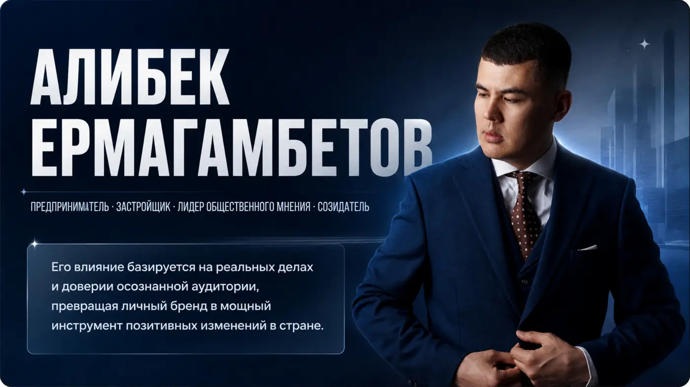

Предпринимательство
Создание и развитие проектов, партнёрств и бизнес-сообщества.
Обо мне
Алибек Ермагамбетов — предприниматель, застройщик, лидер общественного мнения и созидатель.

Позиционирование
В основе личного бренда — доверие аудитории, которое подтверждается масштабными проектами, социальной деятельностью и работой с предпринимательским сообществом.
Алибек объединяет несколько ролей: предпринимателя, девелопера, медиаперсоны и общественного деятеля. За каждой из них — не отдельный образ, а единая система ценностей и действий.
Направления
Создание и развитие проектов, партнёрств и бизнес-сообщества.
Участие в проектах реального сектора и строительной отрасли.
Сильный личный канал с взрослой аудиторией и высоким уровнем доверия.
Поддержка социальных, образовательных и общественно значимых инициатив.
Личный бренд работает сильнее всего тогда, когда внимание превращается в действие.Перейти к проектам →